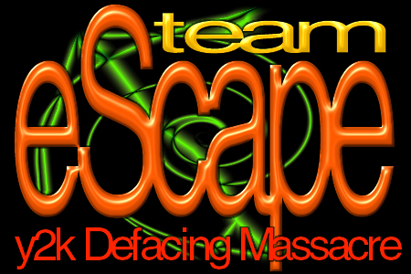

Owned by Team eScape

"Expecting life to treat you fairly because you are a good person is like expecting the bull to not charge at you because you are a vegitarian"
Ah hell, one last site wont hurt :) Click here for the original site
Your the sixth victim to get hacked today, but a lot more are coming. As it says in the picture, "Team eScape y2k Defacing Massacre", so by tonight a lot more sites will be defaced by us :)
Oh by the way, you're also the 20th victim to get hacked by Team eScape! CONGRATULATIONS!
Peace out!
-Team eScape
Greets out to:
Clans:
-d0rkn3t... Even if I don't know you, just feel like saying hiGH)
nb: No files have been deleted or overwritten. The original index.htm file has been renamed for index11.htm. Our entry was spoofed, the logs are fake, but I doubt you would want to try to stop us anyways. We're just telling you you have weak security :)